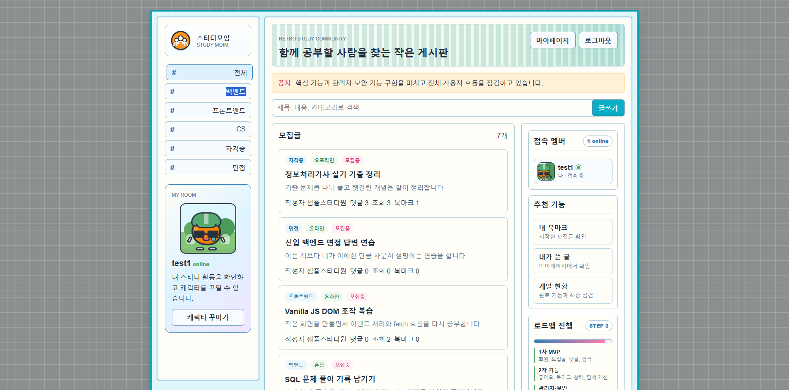

백엔드 기능 구현
게시글, 댓글, 신고, 관리자 기능처럼 웹 서비스에 자주 필요한 기능을 API로 나누어 구현해봤습니다.
Java
Spring Boot
NestJS
About
컴퓨터소프트웨어학과 4학년으로, 백엔드 개발자를 목표로 프로젝트를 만들고 있습니다. 처음부터 완벽한 구조를 알고 시작하기보다는, 직접 서비스를 완성하면서 필요한 기술을 찾아 배우는 방식으로 성장해왔습니다.
프로젝트를 만들 때는 단순히 화면만 완성하는 것보다 사용자가 어떤 흐름으로 기능을 쓰는지, 데이터가 어떻게 저장되고 연결되는지, 배포 후 실제로 접근 가능한 서비스가 되는지를 함께 확인하려고 노력합니다.
Skills
게시글, 댓글, 신고, 관리자 기능처럼 웹 서비스에 자주 필요한 기능을 API로 나누어 구현해봤습니다.
회원, 게시글, 댓글, 장소 정보 같은 데이터를 설계하고, 세션 로그인과 비밀번호 hash도 적용해봤습니다.
프론트엔드 화면을 구성하고 Vercel, Render, Supabase, Railway를 사용해 실제 접속 가능한 서비스로 배포했습니다.
Projects
Main Project
배포 완료경민대학교 승태관 내부 공간을 더 쉽게 찾을 수 있도록 만든 지도형 웹 서비스입니다. 학교 건물이라는 익숙한 공간을 주제로 잡고, 사용자가 필요한 위치 정보를 빠르게 확인하는 흐름을 직접 설계했습니다.
Service Project
배포 완료익명 이미지 게시판 스타일의 커뮤니티 서비스입니다. 게시글, 댓글, 이미지 업로드, 신고와 관리자 기능을 직접 만들며 프론트엔드와 백엔드가 연결되는 구조를 경험했습니다.

Spring Project
배포 완료스터디 모집글을 작성하고 댓글과 답글로 참여 의사를 나누는 서비스입니다. Spring MVC 기반으로 회원, 게시글, 검색, 신고, 관리자 기능을 구현하며 백엔드 기본기를 연습했습니다.
Project Note
학교에서 자주 사용하는 공간을 프로젝트 주제로 잡으면서, 개발이 단순히 기능을 넣는 일이 아니라 사용자의 실제 상황을 정리하는 일이라는 점을 배웠습니다. 학생 입장에서 필요하다고 느낀 정보를 웹 화면으로 옮기며 문제를 발견하고 구현으로 해결하는 경험을 했습니다.
처음 보는 사람도 승태관 안에서 필요한 공간을 빠르게 찾을 수 있도록 정보 구조를 고민했습니다.
아이디어에서 멈추지 않고 실제 접속 가능한 주소로 배포해 다른 사람이 확인할 수 있게 만들었습니다.
추후 검색, 관리자 입력, 더 많은 건물 데이터 같은 기능으로 확장할 수 있는 프로젝트라고 생각했습니다.
Backend Note
GitHub README에는 프로젝트를 만들며 막혔던 부분과 해결 과정을 따로 정리했습니다. 기능을 많이 넣는 것보다, 왜 문제가 생겼고 어떤 방식으로 풀었는지 기록하면서 제 생각을 설명하는 연습을 하고 있습니다.
프론트엔드와 백엔드를 따로 배포한 뒤 CORS와 API 경로 문제가 생겨, Next.js API proxy 구조로 정리했습니다.
Render 무료 서버의 첫 요청 지연을 겪고, health check와 GitHub Actions keep-alive로 운영 흐름을 보완했습니다.
익명 작성자의 수정/삭제, 이미지 용량, 관리자 요청 보호를 다루며 hash, Sharp 리사이징, CSRF 검증을 적용했습니다.
Growth
Java, Spring, DB, 네트워크처럼 백엔드 개발에 필요한 기본 개념을 꾸준히 정리하고 있습니다.
구현한 기능을 README와 포트폴리오에 정리하며 제가 왜 그렇게 만들었는지 설명하는 연습을 하고 있습니다.
로그, 에러 처리, 환경변수, 관리자 기능처럼 배포 후 필요한 요소를 더 공부하고 싶습니다.
회사에서 사용하는 코드 스타일과 협업 방식을 빠르게 배우고, 맡은 기능을 책임 있게 완성하고 싶습니다.
GitHub Records
프로젝트별 README에 구현 기능, 배포 방식, 트러블슈팅, 앞으로 개선할 점을 정리하고 있습니다. 코드뿐 아니라 제가 어떤 문제를 만났고 어떻게 해결했는지 함께 보실 수 있습니다.